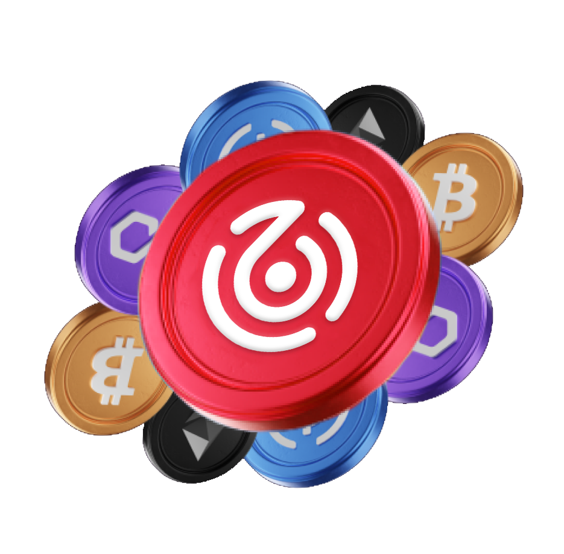

Blockchain Technology
Staking, and application layer solutions
build on Web3 technology

Staking, and application layer solutions
build on Web3 technology
The decision to add a transaction to the blockchain is made by consensus. GoPool provide the computing power to verify transactions and earn rewards in form of digital assets.
Verification requires hardware to be consistently online, without security vulnerabilities that may effect potential rewards. GoPool provide the most secure non-custodial blockchain solutions.
Building towards the next frontier in blockchain infrastructure.

Highly-available Infrastructure
Data Streams
Decentralized Networks
Staking is where a cryptocurrency holder participates in the validation of transactions on a proof-of-stake (PoS) blockchain, similar to mining. This is achieved by the holder making their coins available to the network as a stake (a bit like a security deposit).
The larger the deposited volume of cryptocurrency, the larger the participation in verifying transactions of a blockchain. The volume of coins staked is directly proportionate to the opportunity of being chosen to validate a transaction and earning rewards.
In this way, an attractive, additional income can be generated, which is independent of the possible increase or decrease in the price of the coin itself.
In principle, the profits generated by staking correspond to a dividend distribution for stocks in corporations.
In simple terms, crypto mining is the process of creating cryptocurrency. "Mining" is performed using sophisticated hardware that solves an extremely complex computational math problem, that once completed, contributes towards the verification of a transaction on the blockchain.
It is also the way that new transactions are confirmed by the network and a critical component of the maintenance and development of the blockchain ledger.
The process is complete only when a “miner” verifies the transaction as legitimate. Once that is done, the transaction is locked into the blockchain for everyone to see and is deemed complete. The 'miner' receives cryptocurrency as a reward, usually the same as what is being mined.
0bnetwork is a technology-first organization that has a data driven approach in creating and capturing value in the blockchain ecosystem. Blockchain analytics is the process of analyzing, identifying and 'clustering' data on the blockchain.
0bnetwork Index is a proprietary machine learning tool, analyzing, identifying and 'clustering' data on the blockchain. Combining traditional models like the Markowitz and VIX with sentiment analysis, 0bnetwork Index analyzes, models and visually represents big data from various blockchains to Google Trends for, but not limited to, technical analysis to predict future market behaviors according to certain patterns.
0bnetwork is a leading blockchain infrastructure company. An early pioneer of technology, operating validator nodes and building blockchain infrastructure.
0bnetwork have been working on blockchain projects since 2017, providing a safe and secure technological infrastructure to support the most innovative protocols.
Shortly after inception, 0bnetwork was fully focused on proof of stake protocols and decentralized finance, taking advantage of the knowledge from the mining business.
Today 0bnetwork supply high-uptime and secure technology for some of the major blockchains protocols and became a trustworthy company with resources of $30 million US dollars in their own funds.
0bnetwork robust infrastructure helps investors earn yield from staking and DeFi without taking custody of their digital assets or the complex process of setting up, running and maintaining their own technology.
Lloyd's offers the best-in-class services, such as in-depth research and analysis across our supported protocols combined with leading staking infrastructure. This ensures your digital assets are secure and accessible.
0bnetwork mission is to build a better Internet where individuals and companies are in complete control over how they interact online and earn stable returns.
We have been the trusted staking partner for the past 3 years. Whether you're a hedge fund, venture capital firm or large token holder, contact us below to inquire about our staking services.
Fixed income solutions for digital asset investors.
